Hey Tanuu, this is for you.
“Some stories are too sacred to fit into ordinary words... here is every whispered breath, every sunset gaze, and 365 days of us.”
A YEAR of US.
365 days of luminous memories, countless stolen smiles, and a thousand silent reasons to be eternally grateful for you, Tanuu.
Every sunrise with your laughter in mind.
Bound in conversations, soft whispers, and quiet peace.
A devotion that outspans time itself.
“You transformed my ordinary days into poetry.”
— Forever Yours, Tanish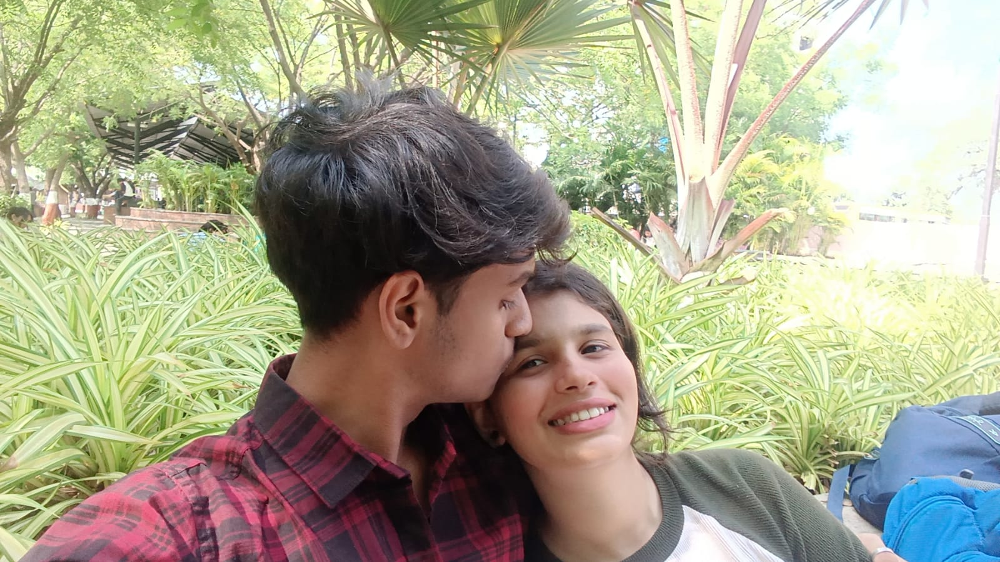
Our Sanctuary
Where time stood still for us, and ordinary moments turned into poetry.
OUR JOURNEY
Chapter One & Beyond
Every gaze recorded, every quiet breath shared. Four distinct seasons marked by devotion, warmth, and the sacred beauty of choosing each other every sunrise.
The First Spark
The day our worlds first aligned. Under a quiet breeze, a single glance rearranged our quiet galaxies. Conversations flowed effortlessly like old sonnets remembered after lifetimes.
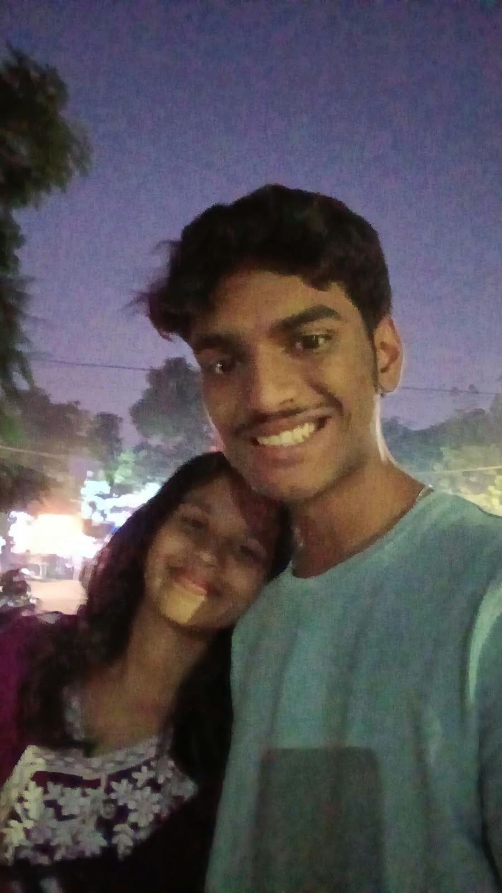
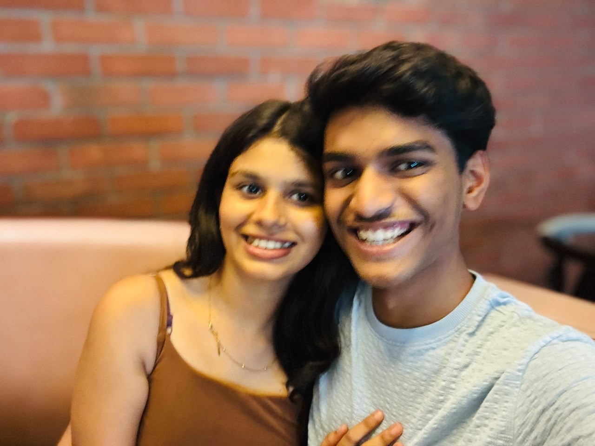
When Time Stood Still
Long drives, hands intertwined beneath warm blankets, and our laughter echoing through quiet avenues. We discovered that home is not a place, but the sanctuary inside your eyes.
Finding Home in You
Through every season, sharing quiet mornings and gentle laughter. We learned each other's quiet thoughts, soothing them into peaceful stillness.
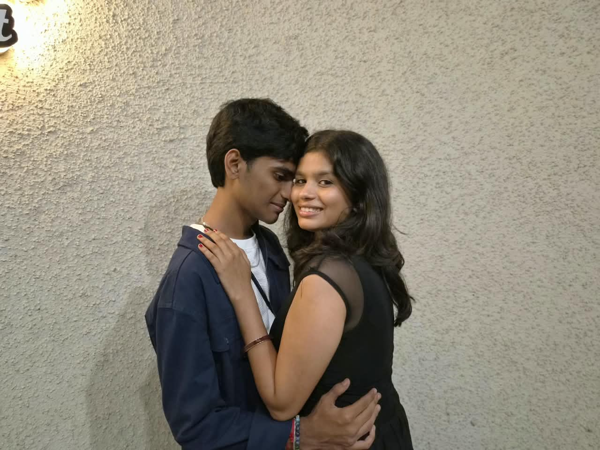
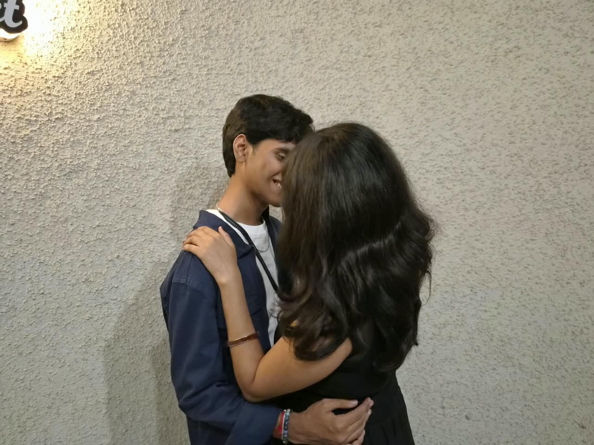
A Year of Unconditional Love
Three hundred and sixty-five sunrises of choosing you, holding you, and falling deeper into your grace. Today is not merely an anniversary; it is the cornerstone of every tomorrow we will ever write together.
OUR MEMORY VAULT
Fragments of light, laughter, and timeless memories
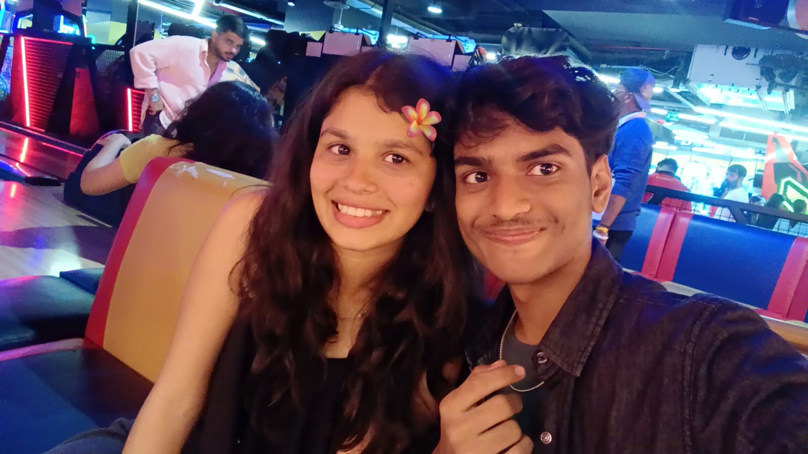
Twilight on the Balcony
Golden skies and whispered memories
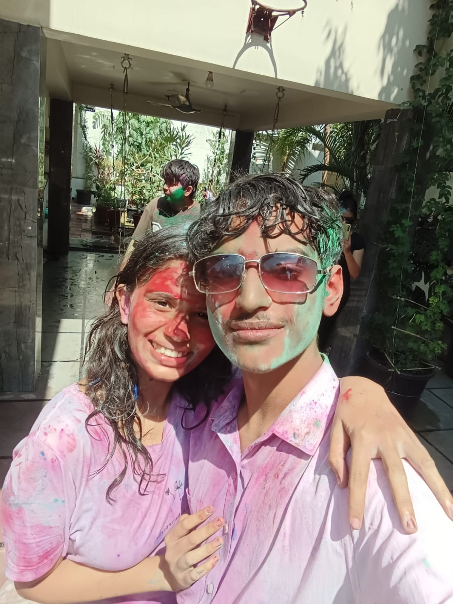
The Coffee We Let Cool
“You smiled, and I forgot what I was about to say.”
Tan & Tanuu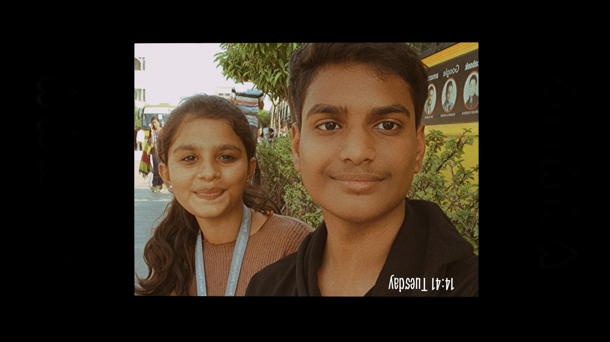
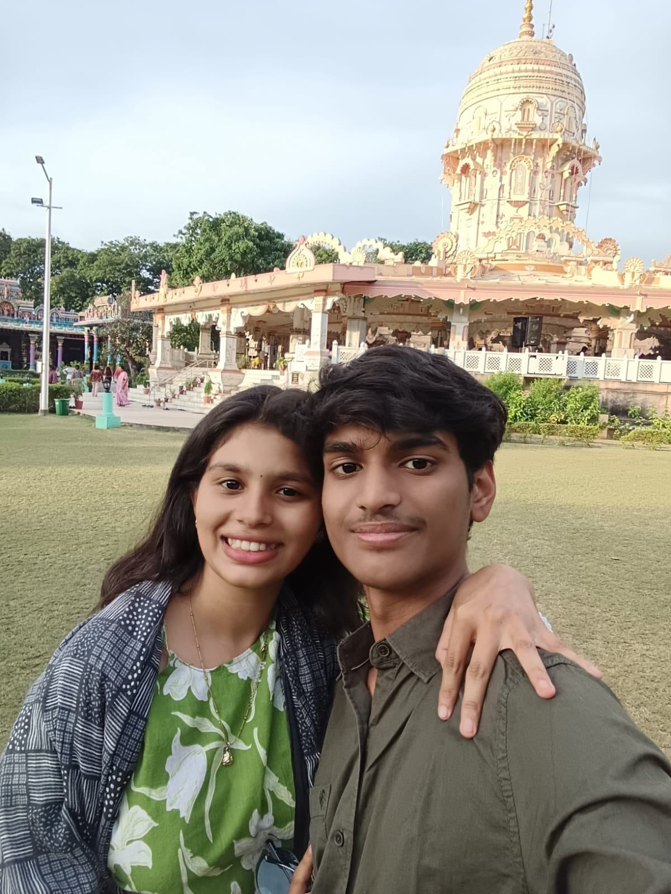
Our Nights Out
When only you mattered in that room
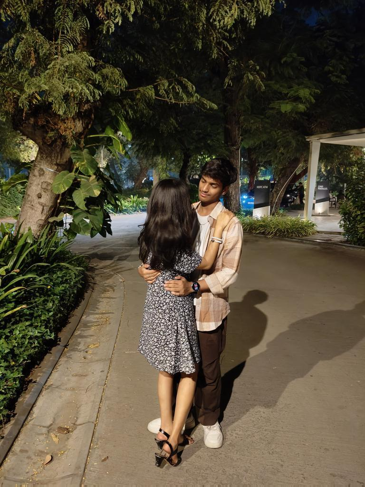
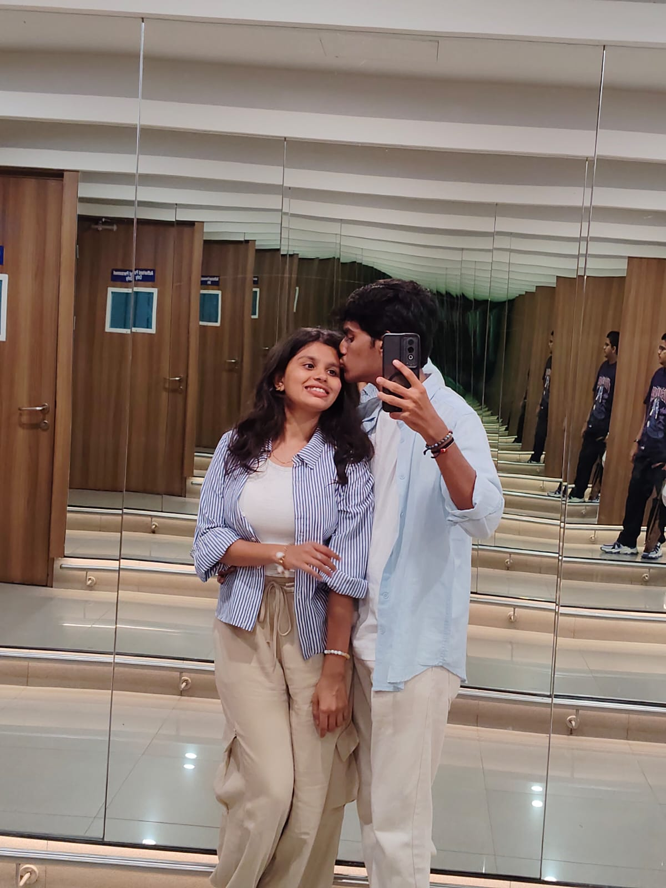
Endless laughter by your side
More Memories Await Our Touch
Over 70+ personal photos and countless whispered memories preserved in our private vault.
THE SOUNDTRACK OF US
“Where words fail, music speaks our quietest truths”
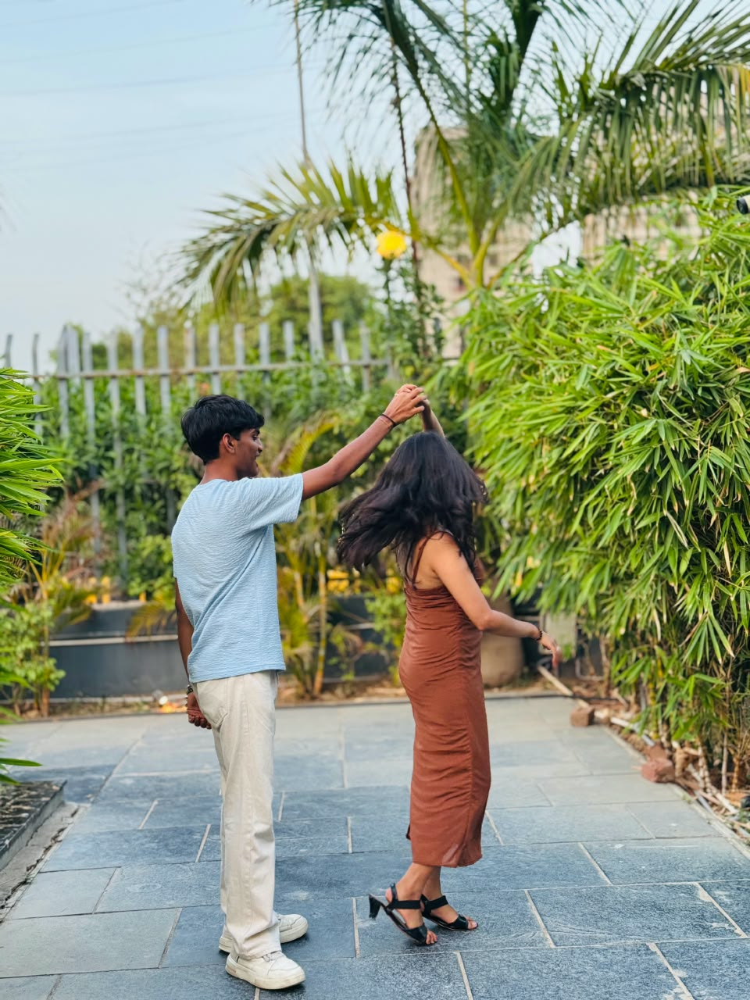
Until I Found You (Instrumental)
Tanish for Tanuu
Until I Found You (Instrumental)
Orchestral Acoustic Strings • Con Moto • In Tanuu's Key
“Georgia, wrap me up in all your gentle grace—
I was drifting in the quiet, searching for your face.”
“I would never fall in love until I found her—
I said, I would never fall unless it’s you I fall into.”
Lost within the darkness until you took my hand, Tanuu.
“Heaven when I held you, safe against my chest,
Three hundred sixty-five days of knowing I was blessed.”
“I said, I would never fall... until I found you.
Forever yours, across every chord of eternity.”
A LETTER FOR MY TANUU
“Words I wish I could tell you every hour of every day.”
My Dearest Tanuu,
If I could crystallize this past year into a single breath, it would be the soft, quiet laughter you let out when you think no one is watching. Before you walked into my world, time was merely something to count—hours ticking away in routine silence. You transformed the mundane into sheer poetry. You made mornings feel sacred, and evenings feel like the quietest sanctuary on earth.
You carry an incandescent kindness that softens every sharp edge of this world. In your warmth, I found a home I never knew I was longing for.
I love how passionately you speak about the little things—the way your eyes light up when a song touches your heart, how you hold my hand without thinking twice in crowded streets, and how effortless it is to exist together in silence. You don’t just share a life with me; you illuminate it from within.
Today marks three hundred and sixty-five days of loving you, yet every single morning feels like day one—the same wonder, the same racing heart, the same gratitude that out of eight billion souls, our stories chose to intertwine. If I were given a thousand lifetimes, Tanuu, I would search the dark until I found your gaze in every single one.
Forever and always yours,
Tanish ♥
First Anniversary • Retrospective Complete
“A little piece of my heart, just for you.”
Recorded in the quiet of the night, words meant only for your ears.
OUR ONE-YEAR ANNIVERSARY REEL
“365 days of luminous moments, woven into a cinematic reel”
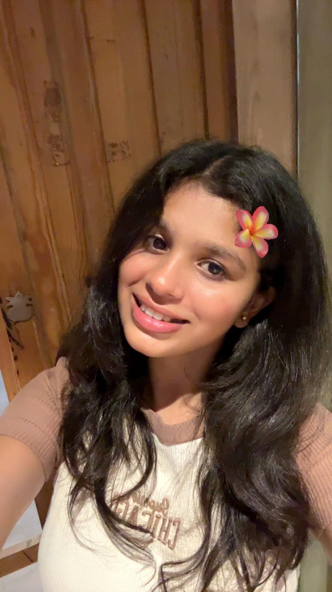
Happy First Anniversary, My Love
“Here's to our every tomorrow • To infinity”
The beginning of our quiet forever
Little Things That Make You Special
A private catalogue of quiet glances, unspoken gestures, and incandescent moments that render my devotion absolute.
The Morning Glow
Dawn Reverie
Stealing My Roast
Shared Habit
Unfiltered Laughter
Pure Melody
Midnight Whispers
Confessions
The Thumb Stroke
Silent Anchor
Bookmarked Pages
Mindful Soul
Your Gentle Grace
Aura
Humming in Transit
Subconscious
Fierce Loyalty
Strength
Tangled Blankets
Sanctuary
Your Adventurous Spirit
Curiosity
Simply Being You
The Core
Things I Promise To Keep Choosing
These are not fleeting sentiments written in sand, but foundational pillars carved in stone for all our chapters ahead.
To listen with all my heart, even in silence.
To stand beside you through every storm and every triumph.
To make you laugh when the world feels heavy.
To choose you, intentionally and passionately, every single day.
To build a future that honors your wildest dreams.
One year down...
And if life gave me a thousand chances...
I would still choose you, Tanuu.
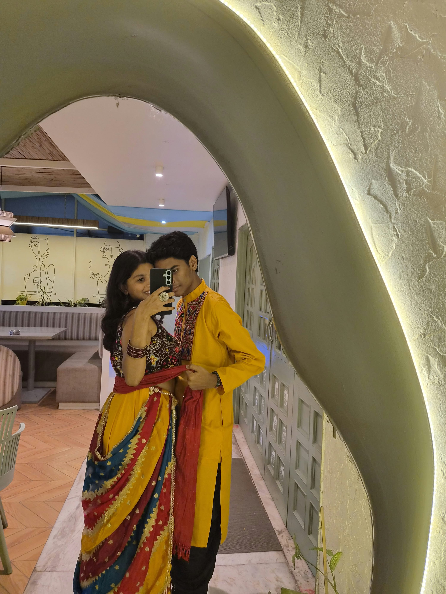
HAPPY FIRST ANNIVERSARY, MY LOVE favorite
With all my love,
Tanish
“Every sunrise with you feels like an answered prayer; every sunset feels like a sacred quiet promised to keep forever.”